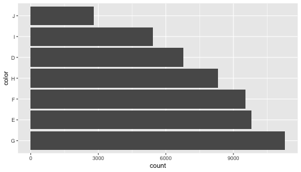

Rによるデータ前処理実習
(Graduate School of Life Sciences, Tohoku University)
R作業を再開する
- 前回作った
***.RprojをダブルクリックしてRStudio起動。
もしくはプロジェクトを新規作成。 - Rスクリプトを新規作成、名前を付けて保存。
getwd(): 現在地を確認。library(): 使いたいパッケージを読み込む。
getwd()
# install.packages("tidyverse")
library(tidyverse)前処理は大きく2つに分けられる
- データ構造を対象とする処理 (前回の主題)
- 使いたい部分だけ抽出 —
select(),filter() - グループごとに特徴を要約 —
group_by(),summarize() - 大きい順に並べ替え —
arrange() - 異なるテーブルの結合 —
*_join() - 変形: 縦長 ↔ 横広 —
pivot_longer(),pivot_wider()
- 使いたい部分だけ抽出 —
- データ内容を対象とする処理 (👈今回の主題)
- 数値を変換する (e.g., 対数、座標系)
- 変換: 連続変数 ↔ カテゴリカル変数 ↔ ダミー変数
- 欠損値
NAに対処 - 文字列から数値や日時を抜き出す
変数/オブジェクトの型 (先週のおさらい)
NULL: 空っぽ- vector: 基本型。一次元の配列。 (👈今回の主役)
- logical: 論理値 (
TRUEorFALSE) - numeric: 数値 (整数
42Lor 実数3.1416) - character: 文字列 (
"historgram.png") - factor: 因子 (文字列っぽいけど微妙に違う)
- ↑それぞれに欠損値
NAも定義されてる
- logical: 論理値 (
- matrix: 二次元の行列。vector同様、全要素が同じ型。
- list: 異なる型でも詰め込める太っ腹ベクトル。
- data.frame: 同じ長さのベクトルを並べた長方形のテーブル。重要。
tibble とか tbl_df と呼ばれる亜種もあるけどほぼ同じ。
vector: 一次元の配列 (先週のおさらい)
1個の値でもベクトル扱い。
ベクトルの各要素に一気に計算を適用できる。
x = c(1, 2, 9) # 長さ3の数値ベクトル
x + x # 同じ長さ同士の計算[1] 2 4 18
y = 10 # 長さ1の数値ベクトル
x + y # 長さ3 + 長さ1 = 長さ3 (それぞれ足し算)[1] 11 12 19
sqrt(x) # square root[1] 1.000000 1.414214 3.000000
data.frameは列vectorの集まり

内容を変更する方法はいくつかある。
diamonds[["price"]] をドルから円に変換する例:
dia = diamonds # 別名コピー
# dollar演算子で指定
dia$price = 109.58 * dia$price
# 名前を文字列で指定
dia[["price"]] = 109.58 * dia[["price"]]
# dplyr::mutate with pipe
dia = diamonds %>%
mutate(price = 109.58 * price)1発ならどれでもいい。流れ作業には mutate() が便利。
数値: numeric型
普通は倍精度浮動小数点型 double として扱われる:
answer = 42
typeof(answer)[1] "double"
明示的に変換したり末尾にLを付けることで整数扱いもできる:
typeof(as.integer(answer))[1] "integer"
whoami = 24601L
typeof(whoami)[1] "integer"
様々な数学関数
ベクトルを受け取り、それぞれの要素に適用
x = c(1, 2, 3)
sqrt(x)[1] 1.000000 1.414214 1.732051
log(x)[1] 0.0000000 0.6931472 1.0986123
log10(x)[1] 0.0000000 0.3010300 0.4771213
exp(x)[1] 2.718282 7.389056 20.085537
正規化 (z-score normalization)
平均=0、標準偏差=1、になるように:
result = diamonds %>%
mutate(depth = scale(depth)) %>%
print() carat cut color clarity table price x y z
<dbl> <ord> <ord> <ord> <matrix> <dbl> <int> <dbl> <dbl> <dbl>
1 0.23 Ideal E SI2 -0.1740899 55 326 3.95 3.98 2.43
2 0.21 Premium E SI1 -1.3607259 61 326 3.89 3.84 2.31
3 0.23 Good E VS1 -3.3849872 65 327 4.05 4.07 2.31
4 0.29 Premium I VS2 0.4541292 58 334 4.20 4.23 2.63
--
53937 0.72 Good D SI1 0.9427440 55 2757 5.69 5.75 3.61
53938 0.70 Very Good D SI1 0.7333376 60 2757 5.66 5.68 3.56
53939 0.86 Premium H SI2 -0.5231005 58 2757 6.15 6.12 3.74
53940 0.75 Ideal D SI2 0.3145249 55 2757 5.83 5.87 3.64
depth = (depth - mean(depth)) / sd(depth) と同じ。
正規化 (min-max normalization)
最小=0、最大=1、になるように:
result = diamonds %>%
mutate(depth = (depth - min(depth)) / (max(depth) - min(depth))) %>%
print() carat cut color clarity depth table price x y z
<dbl> <ord> <ord> <ord> <dbl> <dbl> <int> <dbl> <dbl> <dbl>
1 0.23 Ideal E SI2 0.5138889 55 326 3.95 3.98 2.43
2 0.21 Premium E SI1 0.4666667 61 326 3.89 3.84 2.31
3 0.23 Good E VS1 0.3861111 65 327 4.05 4.07 2.31
4 0.29 Premium I VS2 0.5388889 58 334 4.20 4.23 2.63
--
53937 0.72 Good D SI1 0.5583333 55 2757 5.69 5.75 3.61
53938 0.70 Very Good D SI1 0.5500000 60 2757 5.66 5.68 3.56
53939 0.86 Premium H SI2 0.5000000 58 2757 6.15 6.12 3.74
53940 0.75 Ideal D SI2 0.5333333 55 2757 5.83 5.87 3.64
外れ値の影響を大きく受けることに注意。
外れ値の除去
平均値から標準偏差の3倍以上離れているものを取り除く例:
result = diamonds %>%
filter(abs(depth - mean(depth)) / sd(depth) < 3) %>%
print() carat cut color clarity depth table price x y z
<dbl> <ord> <ord> <ord> <dbl> <dbl> <int> <dbl> <dbl> <dbl>
1 0.23 Ideal E SI2 61.5 55 326 3.95 3.98 2.43
2 0.21 Premium E SI1 59.8 61 326 3.89 3.84 2.31
3 0.29 Premium I VS2 62.4 58 334 4.20 4.23 2.63
4 0.31 Good J SI2 63.3 58 335 4.34 4.35 2.75
--
53252 0.72 Good D SI1 63.1 55 2757 5.69 5.75 3.61
53253 0.70 Very Good D SI1 62.8 60 2757 5.66 5.68 3.56
53254 0.86 Premium H SI2 61.0 58 2757 6.15 6.12 3.74
53255 0.75 Ideal D SI2 62.2 55 2757 5.83 5.87 3.64
唯一の方法ではないし、そもそもやるべきかどうかも要検討
欠損値の除去 tidyr::drop_na()
(指定した列に) NA が含まれてる行を削除する。
df = tibble(x = c(1, 2, NA), y = c("a", NA, "b"))
df %>% drop_na() x y
<dbl> <chr>
1 1 a
問: starwars データセットで試してみよう
name height mass hair_color skin_color eye_color birth_year
<chr> <int> <dbl> <chr> <chr> <chr> <dbl>
1 Luke Skywalker 172 77 blond fair blue 19.0
2 C-3PO 167 75 <NA> gold yellow 112.0
3 R2-D2 96 32 <NA> white, blue red 33.0
4 Darth Vader 202 136 none white yellow 41.9
--
84 Poe Dameron NA NA brown light brown NA
85 BB8 NA NA none none black NA
86 Captain Phasma NA NA unknown unknown unknown NA
87 Padmé Amidala 165 45 brown light brown 46.0
gender homeworld species films vehicles starships
<chr> <chr> <chr> <list> <list> <list>
1 male Tatooine Human <chr [5]> <chr [2]> <chr [2]>
2 <NA> Tatooine Droid <chr [6]> <chr [0]> <chr [0]>
3 <NA> Naboo Droid <chr [7]> <chr [0]> <chr [0]>
4 male Tatooine Human <chr [4]> <chr [0]> <chr [1]>
--
84 male <NA> Human <chr [1]> <chr [0]> <chr [1]>
85 none <NA> Droid <chr [1]> <chr [0]> <chr [0]>
86 female <NA> <NA> <chr [1]> <chr [0]> <chr [0]>
87 female Naboo Human <chr [3]> <chr [0]> <chr [3]>
欠損値の補完 tidyr::replace_na()
欠損値 NA を任意の値で置き換える。
df = tibble(x = c(1, 2, NA), y = c("a", NA, "b"))
df %>% replace_na(list(x = 0, y = "unknown")) x y
<dbl> <chr>
1 1 a
2 2 unknown
3 0 b
問: starwars データセットで試してみよう
欠損値の補完 dplyr::coalesce()
先に指定した列が NA なら次の列の値を採用:
y = c(1, 2, NA, NA, 5)
z = c(NA, NA, 3, 4, 5)
coalesce(y, z)[1] 1 2 3 4 5
型が異なると怒られる:
df = tibble(x = c(1, 2, NA), y = c("a", NA, "b"))
df %>%
mutate(z = coalesce(x, y))Error: Argument 2 must be a double vector, not a character vector
問: starwars データセットで試してみよう
欠損値とみなす dplyr::na_if()
特定の値を NA に置き換える:
df %>%
mutate(x = na_if(x, 1), y = na_if(y, "a")) x y
<dbl> <chr>
1 NA <NA>
2 2 <NA>
3 NA b
問: starwars データセットで試してみよう
文字列
ダブルクォートで囲む。シングルクォートも使える。
x = "This is a string"
y = 'If I want to include a "quote" inside a string, I use single quotes'閉じそびれると変な状態になるので、落ち着いて esc or ctrlc
> "This is a string without a closing quote
+
+
+ HELP I'M STUCK
R備え付けの文字列機能は使いにくい
- 何をやる関数なのか名前から分かりにくい
grep,grepl,regexpr,gregexpr,regexec
sub,gsub,substr,substring - 第一引数は対象文字列？検索パターン？関数ごとに違う。
NAに対する挙動が微妙
stringr — 文字列処理パッケージ

文字列基本操作
fruit4 = head(fruit, 4L) %>% print()[1] "apple" "apricot" "avocado" "banana"
str_length(fruit4) # 長さ[1] 5 7 7 6
str_sub(fruit4, 2, 4) # 部分列[1] "ppl" "pri" "voc" "ana"
str_c(1:4, " ", fruit4, "!") # 結合[1] "1 apple!" "2 apricot!" "3 avocado!" "4 banana!"
パターンマッチング、正規表現
単純な一致だけじゃなく、いろんな条件でマッチングできる:
# aで始まる
str_subset(fruit, "^a")[1] "apple" "apricot" "avocado"
# rで終わる
str_subset(fruit, "r$")[1] "bell pepper" "chili pepper" "cucumber" "pear"
# 英数字3-4文字
str_subset(fruit, "^\\w{3,4}$")[1] "date" "fig" "lime" "nut" "pear" "plum"
正規表現: よく使う特殊文字
| メタ文字 | 意味 | 演算子 | 意味 | |
|---|---|---|---|---|
\d |
数字 | ? |
0回か1回 | |
\s |
空白 | * |
0回以上繰り返し | |
\w |
英数字 | + |
1回以上繰り返し | |
. |
何でも | {n,m} |
n回以上m回以下 | |
^ |
行頭 | XXX(?=YYY) |
YYYに先立つXXX | |
$ |
行末 | (?<=YYY)XXX |
YYYに続くXXX |
R文字列ではバックスラッシュを重ねる必要がある, e.g., "\\d".
\D, \S, W のように大文字にすると反転。
問: str_subset(fruit, "PATTERN") をいろいろ試してみよう
検出 str_detect()
マッチするかどうか TRUE/FALSE を返す。
fruit4 = head(fruit, 4L)
str_detect(fruit4, "^a")[1] TRUE TRUE TRUE FALSE
問: starwars の name 列で filter() してみよう
name height mass hair_color skin_color eye_color birth_year
<chr> <int> <dbl> <chr> <chr> <chr> <dbl>
1 Luke Skywalker 172 77 blond fair blue 19.0
2 C-3PO 167 75 <NA> gold yellow 112.0
3 R2-D2 96 32 <NA> white, blue red 33.0
4 Darth Vader 202 136 none white yellow 41.9
--
84 Poe Dameron NA NA brown light brown NA
85 BB8 NA NA none none black NA
86 Captain Phasma NA NA unknown unknown unknown NA
87 Padmé Amidala 165 45 brown light brown 46.0
gender homeworld species films vehicles starships
<chr> <chr> <chr> <list> <list> <list>
1 male Tatooine Human <chr [5]> <chr [2]> <chr [2]>
2 <NA> Tatooine Droid <chr [6]> <chr [0]> <chr [0]>
3 <NA> Naboo Droid <chr [7]> <chr [0]> <chr [0]>
4 male Tatooine Human <chr [4]> <chr [0]> <chr [1]>
--
84 male <NA> Human <chr [1]> <chr [0]> <chr [1]>
85 none <NA> Droid <chr [1]> <chr [0]> <chr [0]>
86 female <NA> <NA> <chr [1]> <chr [0]> <chr [0]>
87 female Naboo Human <chr [3]> <chr [0]> <chr [3]>
抽出 str_extract()
マッチした部分文字列を取り出す。しなかった要素には NA。
fruit4 = head(fruit, 4L)
str_extract(fruit4, "^a..")[1] "app" "apr" "avo" NA
問: diamonds の clarity 列から数字を取り除いてみよう
carat cut color clarity depth table price x y z
<dbl> <ord> <ord> <ord> <dbl> <dbl> <int> <dbl> <dbl> <dbl>
1 0.23 Ideal E SI2 61.5 55 326 3.95 3.98 2.43
2 0.21 Premium E SI1 59.8 61 326 3.89 3.84 2.31
3 0.23 Good E VS1 56.9 65 327 4.05 4.07 2.31
4 0.29 Premium I VS2 62.4 58 334 4.20 4.23 2.63
--
53937 0.72 Good D SI1 63.1 55 2757 5.69 5.75 3.61
53938 0.70 Very Good D SI1 62.8 60 2757 5.66 5.68 3.56
53939 0.86 Premium H SI2 61.0 58 2757 6.15 6.12 3.74
53940 0.75 Ideal D SI2 62.2 55 2757 5.83 5.87 3.64
置換 str_replace()
カッコ () で囲んだマッチングは後で参照できる:
fruit4 = head(fruit, 4L)
str_replace(fruit4, "..$", "!!")[1] "app!!" "apric!!" "avoca!!" "bana!!"
str_replace(fruit4, "(..)$", "!!\\1")[1] "app!!le" "apric!!ot" "avoca!!do" "bana!!na"
問: starwars の name 列の数字を全部ゼロにしてみよう
name height mass hair_color skin_color eye_color birth_year
<chr> <int> <dbl> <chr> <chr> <chr> <dbl>
1 Luke Skywalker 172 77 blond fair blue 19.0
2 C-3PO 167 75 <NA> gold yellow 112.0
3 R2-D2 96 32 <NA> white, blue red 33.0
4 Darth Vader 202 136 none white yellow 41.9
--
84 Poe Dameron NA NA brown light brown NA
85 BB8 NA NA none none black NA
86 Captain Phasma NA NA unknown unknown unknown NA
87 Padmé Amidala 165 45 brown light brown 46.0
gender homeworld species films vehicles starships
<chr> <chr> <chr> <list> <list> <list>
1 male Tatooine Human <chr [5]> <chr [2]> <chr [2]>
2 <NA> Tatooine Droid <chr [6]> <chr [0]> <chr [0]>
3 <NA> Naboo Droid <chr [7]> <chr [0]> <chr [0]>
4 male Tatooine Human <chr [4]> <chr [0]> <chr [1]>
--
84 male <NA> Human <chr [1]> <chr [0]> <chr [1]>
85 none <NA> Droid <chr [1]> <chr [0]> <chr [0]>
86 female <NA> <NA> <chr [1]> <chr [0]> <chr [0]>
87 female Naboo Human <chr [3]> <chr [0]> <chr [3]>
形式を変える・整える
fruit4 = head(fruit, 4L)
str_to_upper(fruit4) # 大文字に[1] "APPLE" "APRICOT" "AVOCADO" "BANANA"
str_pad(fruit4, 8, "left", "_") # 幅を埋める[1] "___apple" "_apricot" "_avocado" "__banana"
stringi パッケージはさらに多機能
stringi::stri_trans_nfkc("ｶﾀｶﾅ") # 半角カナを全角に[1] "カタカナ"
文字列から別の型に

これはstringrではなくreadrの担当:
parse_number(c("p = 0.02 *", "N_A = 6e23"))[1] 2e-02 6e+23
parse_double(c("0.02", "6e23")) # 異物には警告[1] 2e-02 6e+23
parse_logical(c("1", "true", "0", "false"))[1] TRUE TRUE FALSE FALSE
parse_date("2019-12-27")[1] "2019-12-27"
因子型 factor
カテゴリカル変数を扱うための型。文字列っぽいけど中身は数。
iris = tibble::as_tibble(iris) %>% print() Sepal.Length Sepal.Width Petal.Length Petal.Width Species
<dbl> <dbl> <dbl> <dbl> <fct>
1 5.1 3.5 1.4 0.2 setosa
2 4.9 3.0 1.4 0.2 setosa
3 4.7 3.2 1.3 0.2 setosa
4 4.6 3.1 1.5 0.2 setosa
--
147 6.3 2.5 5.0 1.9 virginica
148 6.5 3.0 5.2 2.0 virginica
149 6.2 3.4 5.4 2.3 virginica
150 5.9 3.0 5.1 1.8 virginica
levels(iris[["Species"]])[1] "setosa" "versicolor" "virginica"
因子型 factor: 文字列との違い1
取りうる値 (levels) が既知。
typoがあると NA 扱い。
month_levels = c(
"Jan", "Feb", "Mar", "Apr", "May", "Jun",
"Jul", "Aug", "Sep", "Oct", "Nov", "Dec"
)
x2 = c("Dec", "Apr", "Jam", "Mar")
factor(x2, levels = month_levels)[1] Dec Apr <NA> Mar
Levels: Jan Feb Mar Apr May Jun Jul Aug Sep Oct Nov Dec
因子型 factor: 文字列との違い2
順序がある。
文字列をソートすると当然アルファベット順になるけど、
因子型にはそうじゃない順序を持たせられる:
x1 = c("Dec", "Apr", "Jan", "Mar")
sort(x1)[1] "Apr" "Dec" "Jan" "Mar"
y1 = factor(x1, levels = month_levels)
as.integer(y1)[1] 12 4 1 3
因子型 factor: 順序の情報は作図で生きる
文字列ならアルファベット順、因子型なら任意指定可能。
頻度順にする例:
diamonds %>%
mutate(color = fct_infreq(color)) %>%
ggplot(aes(x = color)) +
geom_bar() + coord_flip()
tidyverse の因子型担当は forcats

fct_reorder(): 別の変数に応じて順序を並べ替えfct_infreq(): 頻度に応じて順序を並べ替えfct_relevel(): すべて手動で再設定fct_lump(): 少なすぎるカテゴリを”その他”としてまとめる
ダミー変数に変換
イチゼロの値を持たせて横広に変形するのと等価。
iris %>%
rowid_to_column() %>% select(-starts_with("Sepal")) %>%
mutate(value = 1L) %>%
pivot_wider(names_from = Species, values_from = value, values_fill = c(value = 0L)) rowid Petal.Length Petal.Width setosa versicolor virginica
<int> <dbl> <dbl> <int> <int> <int>
1 1 1.4 0.2 1 0 0
2 2 1.4 0.2 1 0 0
3 3 1.3 0.2 1 0 0
4 4 1.5 0.2 1 0 0
--
147 147 5.0 1.9 0 0 1
148 148 5.2 2.0 0 0 1
149 149 5.4 2.3 0 0 1
150 150 5.1 1.8 0 0 1
問: これの逆向きをやってみよう
日時型: POSIXct, POSIXlt
- POSIXct: エポックからの経過秒数。比較や差分などを取りやすい。
- POSIXlt: list(年, 月, 日, 時, 分, 秒)。単位ごとに抜き出しやすい。
now = "2019-12-27 13:00:00"
ct = as.POSIXct(now)
unclass(ct)[1] 1577419200
attr(,"tzone")
[1] ""
lt = as.POSIXlt(now)
unclass(lt) %>% as_tibble() sec min hour mday mon year wday yday isdst zone gmtoff
<dbl> <int> <int> <int> <int> <int> <int> <int> <int> <chr> <int>
1 0 0 13 27 11 119 5 360 0 JST NA
素のRでも扱えるけど lubridate パッケージを使うともっと楽に。
lubridate — 日時型処理パッケージ

日時型への変換:
today = ymd(20191227)
ymd(c("20191227", "2019-12-27", "19/12/27"))[1] "2019-12-27" "2019-12-27" "2019-12-27"
日時型から単位ごとに値を取得:
month(today)[1] 12
wday(today, label = TRUE)[1] Fri
Levels: Sun < Mon < Tue < Wed < Thu < Fri < Sat
本日前半のまとめ
- vectorには型がある: 文字列、数値、因子、日時、etc.
- 大概の操作はvector全体に一括適用
- 文字列を扱うには stringr
- 正規表現は強力・汎用的
- 因子を扱うには forcats
- 知っておくと作図で有利
- 日時を扱うには lubridate
各パッケージのチートシート.pdfを手元に持っておくと便利。
Reference
- R for Data Science — Hadley Wickham & Garrett Grolemund
- Website, Book
- 日本語版書籍(Rではじめるデータサイエンス)
RユーザのためのRStudio[実践]入門 — 松村優哉ほか
前処理大全 — 本橋智光
- 過去の講義資料
- 「Rにやらせて楽しよう — データの可視化と下ごしらえ」 岩嵜航 2018
- 「Rを用いたデータ解析の基礎と応用」石川由希 2019 名古屋大学
- 「Hands-on R Lecture for Makino Lab」 岩嵜航 2019 東北大学
- Official documents:
- tidyverse, dplyr, tidyr, tibble, readr, stringr, forcats lubridate